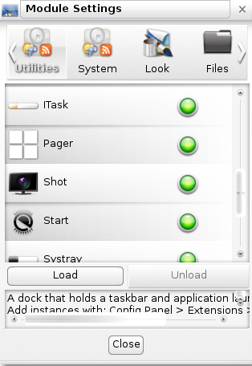

The Bodhi Guide to Enlightenment
Modules
This page explains in some detail what Enlightenment (E17) Modules are, how they are related to Gadgets, how to load Modules from disk storage, and how to find Modules in the Bodhi Linux repository.
What is a Module?
A Module is a small E17 program that can be used to extend the functionality of your desktop. They can be installed to the PC and loaded into RAM at runtime. By not loading all its Modules by default, E17 minimizes the amount of RAM being used at any given time. The more Modules you load, the more RAM will be occupied. On PCs with 512 MB of RAM or less, this is an important consideration. But due to the efficiency of the Enlightenment Foundation Libraries (EFL), each Module takes up very little additional memory. Many Modules, once loaded into RAM, provide access to Gadgets that can be placed on the desktop or on a Shelf.
How to load Modules
Go to Menu -> Settings -> Modules and the Module Settings dialogue appears:

Notice the tabs at the top. There are Modules for Utility, System, Look and so on. In the screenshot above, the Forecasts module shows with a green light to its right (this is the indicator in the default Profile; other Profiles may have different indicators), meaning it is already loaded. There is a brief description of what the Module does in the window at the bottom. You have the option of unloading it to save memory or reduce the clutter on your desktop. The next Module listed, IBox, is not loaded. If you click on the IBox line, the Load button will become highlighted. The scrollbar at the right lets you scroll down the list to see other Modules on the disk and their status - either loaded into RAM or ready to be loaded.
Modules and Gadgets
Many of the Modules provide Gadgets that can be added to your desktop or on a Shelf. Some, like Forecasts, can only be displayed on the desktop, while others like Systray can only be displayed on a Shelf. Several Modules exist to only provide a single Gadget such as Clock. Typically, it's not enough to load a Module into RAM, because E17 lets you choose where to display a loaded Module's Gadgets. Please see the Gadgets and/or the Shelves section for details on placing a Gadget in one or the other location.
Installed Modules
Please see the Module Reference page for a list of all Modules installed by default.
Downloading Modules
Many Modules, such as Forecasts, are not included in the Bodhi Linux installation CD in order to keep it within size limits, in accordance with the Bodhi Linux philosophy. Modules that are not installed by default can be found in the Bodhi Linux software repository via Synaptic Package Manger in Main Menu -> Applications -> Preferences. They can be installed like any other Linux program. Besides Forecasts, check out the following useful Enlightenment Modules that are not installed by default:
- cpu
- ecomorph
- forecasts
- mem
- news
- photo
Search for "enlightenment module" in the Quick Search box of Synaptic to find any others.
For a complete list of available Modules see the Module Reference.
Deleting a Module
Because of the nature of Modules it is not strictly necessary to delete/uninstall them. As long as they are not loaded they will not be using any system resources (RAM for example) but only a small amount of disk space.
If you do find it necessary to completely remove one (or more) however, simply uninstall it in Synaptic Package Manager like any other other application or use the command:
sudo apt-get remove [module-name]
| Prev: | Contents: | Next: |
| Virtual Desktops | Index | Module Reference |